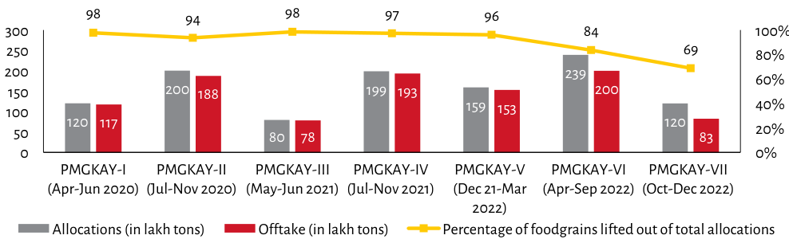

| Period | Allocations (in lakh tons) | Offtake (in lakh tons) | Percentage of foodgrains lifted out of total allocations | | :--- | :--- | :--- | :--- | | PMGKAY-I (Apr-Jun 2020) | 120 | 117 | ~98% | | PMGKAY-II (Jul-Nov 2020) | 200 | 188 | ~94% | | PMGKAY-III (May-Jun 2021) | 80 | 78 | ~98% | | PMGKAY-IV (Jul-Nov 2021) | 199 | 193 | ~97% | | PMGKAY-V (Dec 21-Mar 2022) | 159 | 153 | ~96% | | PMGKAY-VI (Apr-Sep 2022) | 239 | 200 | 84% | | PMGKAY-VII (Oct-Dec 2022) | 120 | 83 | 69% |
